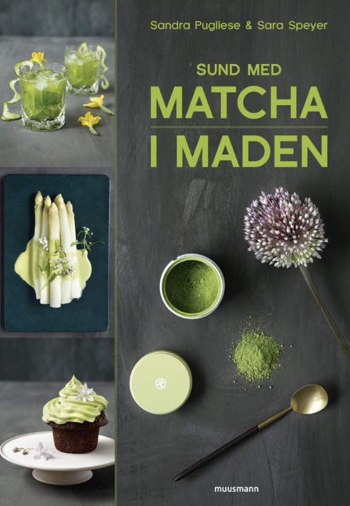

Forside Livsstil Kultur Mig og min mor: 5 boggaveideer du kan forære din mor til Mors Dag
Har du en mor, som min, der elsker bøger? Så har jeg her nogle gode bud på hvilke, du kan forære hende til Mors Dag.
For første gang udkommer Celeste Ng (udtales Ing) på dansk. Dette er hendes anden roman, som har høstet stor ros over hele verden. Den foregår i det idylliske Shaker Heights, hvor alt er snorlige og perfekt. Men under overfladens hemmeligheder og fordomme. Bogen sættes i forbindelse med HBO-serien “Big Little Lies”, og Reese Witherspoon har da også købt rettighederne til at lave en serie ud af bogen.
Leonora Christina Skov har længe villet skrive en bog om sit forhold til sin mor, men har ikke turdet, da hun var bange for morens reaktion. Men efter morens død, har Leonora Christina Skov nu taget mod til sig, og skriver om sin barndom i parcelhuset, forfatterdrømmene, og hvordan hun blev beskyldt for at gøre sin mor syg.
Renee Toft Simonsen er kommet med en ærlig fortælling om, hvordan det er, at være fyldt 50, om overgangsalderen, og om de følelsesmæssige rutsjeture, der følger med. Selvom den også selvom, du ikke liiiige er nået den alder måske.
Gin er in! Og min mor kan godt lide en GogT, så jeg ved hun vil elske den her bog. Gin og tonic er nemlig ikke bare dét, men skal komplementere hinanden på lækker vis. Bogen er fyldt med historien om gin og fagtermer, og selvfølgelig lækre opskrifter på forskellige GogT’s.
Matcha er blevet populært herhjemme, men du behøver ikke kun at drikke den. Matcha kan også bruges i madlavning, og denne bog og spækket med lækre opskrifter med matcha. Foruden opskrifter, fortæller bogen også om de gode egenskaber matcha har, og hvilke gode ting den gør for din krop. Go (Matcha)-green …
